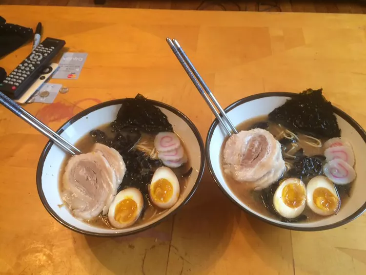

Home
Shoyu Ramen

Description: Shoyu ramen is a ramen dish with a broth made of soy sauce.
Shoyu means soy sauce in Japanese. It has high umami flavors along with a tangy strong taste too. Shoyu ramen is also known for its sprint noodles and array of toppings.
Ingrediant
- Black fungus
- Mirin
- Soy sauce
- Brown sugar
- Onion bulbs
- Onion
- Garlic
- Pork belly
- Butcher's twine
- White Sugar
- Eggs
- Miso paste
- Ramen noodles
- Nori
- Fish paste
Steps
- Preheat the oven to 275 degrees F (135 degrees C).
- Place black fungus in a large bowl and fill with water.
- Combine mirin, 1/2 cup soy sauce, 1/2 cup brown sugar, 3 green onion bulbs, chopped onion, and garlic in an oven-safe pot over high heat. Bring to a boil.
- Place pork belly skin-side down on a flat work surface. Roll up lengthwise and wrap with butcher's twine. Place pork belly in the pot with the mirin mixture and partially cover with a lid.
- Bake in the preheated oven until pork is tender and an instant-read thermometer inserted into the center reads at least 145 degrees F (63 degrees C), about 4 hours.
- Bring a separate pot of water to a boil over high heat. Gently place eggs in the pot and cook until yolks are barely set, 8 to 10 minutes. Transfer eggs to a bowl filled with ice water. Let sit, about 1 minute. Remove from water and peel eggs.
- Place eggs in a container with 1 cup water, 1/2 cup soy sauce, and 2 tablespoons brown sugar. Dampen a paper towel in the mixture and use it to cover the container. Refrigerate 4 hours to overnight.
- Drain the fungus and add to the liquid in the pot with the pork belly. Cover with a lid and refrigerate, 4 hours to overnight.
- Skim fungus from the top of the pork belly mixture and place in a pot with 8 cups water; fungus should be covered in pork belly fat. Add 1/4 cup soy sauce and miso paste. Bring to a boil.
- Remove skin from the pork belly using a knife. Chop the meat into pieces of desired thickness. Cut eggs in half lengthwise.
- Bring a separate pot of water to a boil. Cook ramen in boiling water, stirring occasionally, until noodles are tender, yet firm to the bite, about 3 minutes. Drain.
- Place 4 slices of nori diagonally in the corner of each bowl. Place noodles on top; arrange 2 egg halves and a few pork belly slices in separate corners. Cover with black fungus, top with green onions, and pour in broth. Top each bowl with a few slices of naruto. Let sit, about 3 minutes, before serving.